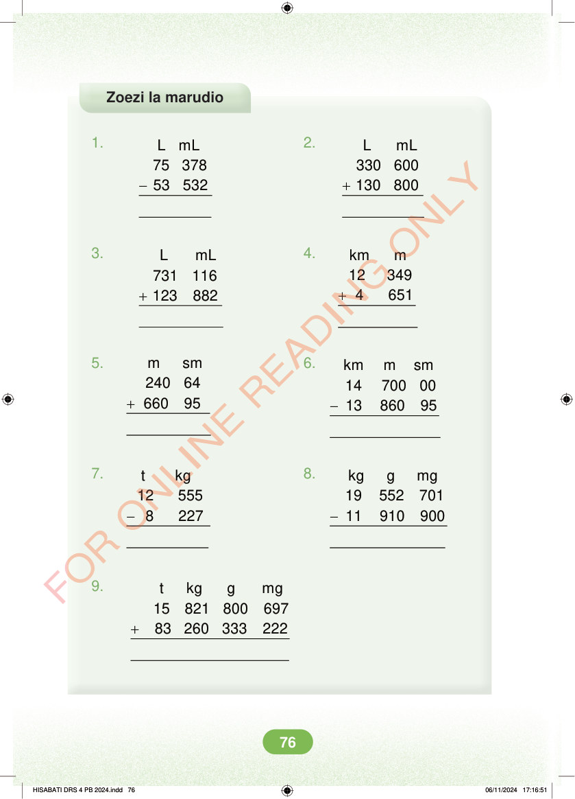

Zoezi la marudio 1. 2. - + L mL 330 600 130 800 L mL 75 378 53 532 3. 4. + + km m 12 349 4 651 L mL 731 116 123 882 5. 6. + m sm 240 64 660 95 - km m sm 14 700 00 13 860 95 7. 8. - - t kg 12 555 8 227 kg g mg 19 552 701 11 910 900 9. + t kg g mg 15 821 800 697 83 260 333 222 HISABATI DRS 4 PB 2024.indd 76 HISABATI DRS 4 PB 2024.indd 76 06/11/2024 17:16:51 06/11/2024 17:16:51